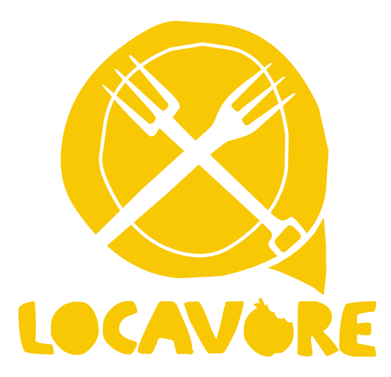

Buy a set of glass jars, as you can display your groceries on an open kitchen shelf. Now, as a newbie zero waste shopper, these jars come in even handier, you can use them to fill all my beans, grains and pasta in. Also try to keep all small glass jars from olives, antipasti, jam etc., peel off the labels in a hot water bath and re-use them for seeds, nuts and dried fruit.e

If you try to head over to your local farmers market on a Sunday morning, they always have fresh veg on the table. Take your cotton bag down and fill it right up. Not only will you saving the enviroment with your waste free shopping youre also having a great fresh meal- score!
Super Market Glasgow is the newest market from the team at The Glasgow Markets. This twice-monthly market is held in the city centre alongside street food market, Platform at Argyle St Arches. Visitors can enjoy a carefully curated selection of over 50 Independent retailers from across the city and beyond showcasing everything from vintage and antiques to children's toys, jewellery, beauty and homeware and a whole lot more.
For the real Glasgow experience, and even if you are not a keen shopper, the world famous Barras market situated in the Gallowgate in the east of the city is well worth a visit. No matter your budget, savvy shoppers are sure to find something to suit all tastes. From fashion to white goods and everything in between the Barras sells it all. If you get peckish, why not try their famous homemade doughnuts too. Just follow your nose.
These are perfect for bringing homemade lunch with you in reusable food containers, or simply the empty containers if you know you need to get a takeaway lunch, like soup or salads from the deli. On your way home, you can re-use these as containers for more zero-waste shopping. Most delis will not have any issue with filling your own containers, and if you shops for meat or cheese at your local supermarket, you might also be fine using these instead of the plastic-lined paper wrappers! Locavore boxes The weekly veg box from Locavore usually contains 7-9 different vegetables, depending on the season and availability. All the produce will be sourced locally, often grown my the Locavore team themselves, but never from outside the UK. If you have a subscription you can also add one of Locavore’s monthly special boxes – organic local meats and cheeses, grains or pasta from the bulk section, a vegan chilled box or sweet or savoury treats. However, not all of these will always be plastic free. Find out more here.Locavore boxes Roots & Fruits boxes The weekly veg box from Roots & Fruits usually contains a selection of potatoes, carrots, onions, bananas, apples, garlic, lemons, plus some additional fruit and vegetables from the market. You can choose between organic and non-organic produce and add things like mushrooms or eggs to your delivery for an additional cost. Find out more here.
Bringing your new glass jars to the shop is way too bulky and heavy. Instead, invested in a set of light-weight cotton bags and always have one or two in your day bag for spontaneous shopping sprees. Tote bag is something you should just always have with you. You can use them for extra shopping, if your backpack runs out of space. Anything But Plastic is a small independent online shop with a small but essential collection of plastic-free products to kick off your zero-waste lifestyle. From cleaning products and utensils for your bathroom and kitchen to plastic-free toiletries and makeup you can stock up on all your essentials and support a local business at the same time

Upcycling, also known as creative reuse, is the process of transforming by-products, waste materials, useless, or unwanted products into new materials or products of better quality or for better environmental value. Upcycling is the opposite of downcycling, which is the other face of the recycling process.
Rainbow turtle have some fantastic gadgets and ideas to get to a fully ethical shopper!

Locavore have all sorts of plastic free goods, and so many initatives to help you get started- also fabby food!
Roots and fruits are a great community for helping you buy all sorts of plastic free goods.